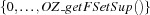

| << Prev | - Up - | Next >> |
OZ_FSetConstraintAn OZ_FSetConstraint defines (among other things) a set of values that are definitely in (the greatest lower bound), a set of values that are definitely out of any set satisfying the Constraint; and a set of values who may or may not be in. These sets will be referred to as IN, OUT, and UNKNOWN sets in the descriptions below.
OZ_FSetConstraint [default constructor]
OZ_FSetConstraint(void);
Creates an uninitialised OZ_FSetConstraint entity.
OZ_FSetConstraint [overloaded constructor]
OZ_FSetConstraint(const OZ_FSetValue &fs);
Creates a constraint where the IN set is fs.
OZ_FSetConstraint [overloaded constructor]
OZ_FSetConstraint(OZ_FSetState state);
Creates a Finite Set Constraint with IN set of state state, and OUT its complement.
value of | constraint |
|---|---|
| the empty set matches |
| the set  matches. |
OZ_FSetConstraint [overloaded constructor]
OZ_FSetConstraint(const OZ_FSetConstraint &fsc);
Copy-constructs a Finite Set Constraint from fsc.
init [member function]
void init(void);
Initializes an empty constraint.
init [member function]
void init(const OZ_FSetValue &fs);
Initializes a constraint that is only matched by fs.
init [member function]
void init(OZ_FSetState);
Initializes a Finite Set Constraint with IN set of state state, and OUT its complement.
value of | constraint |
|---|---|
| the empty set matches |
| the set matches. |
These all access members of *this.
getKnownIn [constant member function]
int getKnownIn(void) const;
Returns the cardinality of IN.
getKnownNotIn [constant member function]
int getKnownNotIn(void) const;
Returns the cardinality of OUT.
getUnknown [constant member function]
int getUnknown(void) const;
Returns the cardinality of UNKNOWN.
getGlbSet [constant member function]
OZ_FSetValue getGlbSet(void) const;
Returns IN.
getLubSet [constant member function]
OZ_FSetValue getLubSet(void) const;
Returns the set of values that may be in sets satisfying the constraint.
getUnknownSet [constant member function]
OZ_FSetValue getUnknownSet(void) const;
Returns UNKNOWN.
getNotInSet [constant member function]
OZ_FSetValue getNotInSet(void) const;
Returns OUT.
getGlbCard [constant member function]
int getGlbCard(void) const;
Returns the cardinality of IN.
getLubCard [constant member function]
int getLubCard(void) const;
Returns the cardinality of the set of all values that are in some a set satisfying the constraint.
getNotInCard [constant member function]
int getNotInCard(void) const;
Returns the cardinality of OUT.
getUnknownCard [constant member function]
int getUnknownCard(void) const;
Returns the cardinality of UNKNOWN.
iterators [constant member function]int getGlbMinElem(void) const;
int getLubMinElem(void) const;
int getNotInMinElem(void) const;
int getUnknownMinElem(void) const;
int getGlbMaxElem(void) const;
int getLubMaxElem(void) const;
int getNotInMaxElem(void) const;
int getUnknownMaxElem(void) const;
int getGlbNextSmallerElem(int) const;
int getLubNextSmallerElem(int) const;
int getNotInNextSmallerElem(int) const;
int getUnknownNextSmallerElem(int) const;
int getGlbNextLargerElem(int) const;
int getLubNextLargerElem(int) const;
int getNotInNextLargerElem(int) const;
int getUnknownNextLargerElem(int) const;
These functions allow to access and iterate over elements of several sets related to the constraint.
name | function |
|---|---|
| get the minimal element, -1 if empty |
| get the maximal element, -1 if empty |
| get the next larger element above |
| get the next smaller element below |
name | referred set |
|---|---|
| the set of values that are in all sets satisfying the constraint |
| the set of all values that are in some sets satisfying the constraint |
| the set of values that are in some, but not all sets satisfying the constraint |
| the set of values that are in no sets satisfying the constraint |
getCardMin [constant member function]
int getCardMin(void) const;
Returns the minimal allowed cardinality.
getCardMax [constant member function]
int getCardMax(void) const;
Returns the maximal allowed cardinality (-1 means the constraint cannot be satisfied)
getCardSize [constant member function]
int getCardSize(void) const;
Returns the size of the interval between the minimal and maximal allowed cardinality.
getKnownInList [constant member function]
OZ_Term getKnownInList(void) const;
Returns IN as a list.
getKnownNotInList [constant member function]
OZ_Term getKnownNotInList(void) const;
Returns OUT as a list.
getUnknownList [constant member function]
OZ_Term getUnknownList(void) const;
Returns UNKNOWN as a list.
getLubList [constant member function]
OZ_Term getLubList(void) const;
Returns the union of IN and UNKNOWN as a list.
getCardTuple [constant member function]
OZ_Term getCardTuple(void) const;
Returns a tuple consisting of integers giving the minimum and maximum allowed cardinality.
Where an operator member Function returns an OZ_Boolean, it is to indicate whether constraint becomes unsatisfiable in the operation.
operator = [operator member function]
OZ_FSetConstraint &operator = (const OZ_FSetConstraint &fsc);
fsc gets assigned to *this.
operator - [operator constant member function]
OZ_FSetConstraint operator - (void) const;
The complementary constraint is returned.
operator += [operator member function]
OZ_Boolean operator+=(int i);
i is added to *this.IN.
operator -= [operator member function]
OZ_Boolean operator-=(int i);
i is added to *this.OUT.
operator <<= [operator member function]
OZ_Boolean operator <<= (const OZ_FSetConstraint &fsc);
fsc is added to *this.
operator % [operator member function]
OZ_Boolean operator % (const OZ_FSetConstraint &fsc);
Returns OZ_True if all values known to be in *this are known not to be in fsc, and the other way round.
operator & [operator constant member function]
OZ_FSetConstraint operator & (const OZ_FSetConstraint &fsc) const;
Returns the intersection of *this and fsc.
operator | [operator constant member function]
OZ_FSetConstraint operator | (const OZ_FSetConstraint &fsc) const;
Returns the union of *this and fsc.
operator - [operator constant member function]
OZ_FSetConstraint operator - (const OZ_FSetConstraint &fsc) const;
Returns the difference of *this and fsc.
operator <= [operator member function]
OZ_Boolean operator <= (const OZ_FSetConstraint &fsc);
Returns OZ_True if *this has as least the elements excluded (in OUT) that are excluded by fsc.
operator >= [operator member function]
OZ_Boolean operator >= (const OZ_FSetConstraint &);
Returns OZ_True if *this has as least the elements included (in IN) that are included by fsc.
operator != [operator member function]
OZ_Boolean operator != (const OZ_FSetConstraint &fsc);
The elements known to be in fsc are excluded from *this
operator == [operator member function]
OZ_Boolean operator == (const OZ_FSetConstraint &fs) const;
Returns OZ_True if *this is equivalent to fsc.
le [member function]
OZ_Boolean le(const int i);
All values above i are excluded from *this.
ge [operator member function]
OZ_Boolean ge(const int);
All values below i are excluded from *this.
putCard [member function]
OZ_Boolean putCard(int cardmin, int cardmax);
The minimum and maximum allowed cardinality is set.
isValue [constant member function]
OZ_Boolean isValue(void) const;
Returns OZ_True if the constraint determines exactly one set.
isIn [constant member function]
OZ_Boolean isIn(int i) const;
Returns OZ_True if i is known to be in every(!) set satisfying the constraint.
isNotIn [constant member function]
OZ_Boolean isNotIn(int i) const;
Returns OZ_True if i is in no set satisfying the constraint.
isEmpty [constant member function]
OZ_Boolean isEmpty(void) const;
Returns OZ_True if *this is satisfied only by the empty set.
isFull [constant member function]
OZ_Boolean isFull(void) const;
Returns true if *this can only be satisfied by the set containing all possible values (i. e. , ).
isSubsumedBy [constant member function]
OZ_Boolean isSubsumedBy(const OZ_FSetConstraint &fsc) const;
Returns true if *this is subsumed by fsc.
copyExtension [member function]
void copyExtension(void);
This member function replaces the current extension of the set constraint representation by a copy of it.
disposeExtension [member function]
void disposeExtension(void);
This member function frees the heap memory occupied by the extension of the set constraint.
toString [constant member function]
char * toString(void) const;
Returns a textual representation of the finite set constraint pointing to a static array of chars.
| << Prev | - Up - | Next >> |